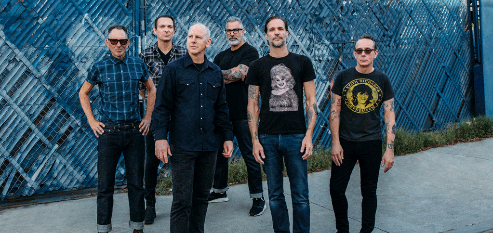
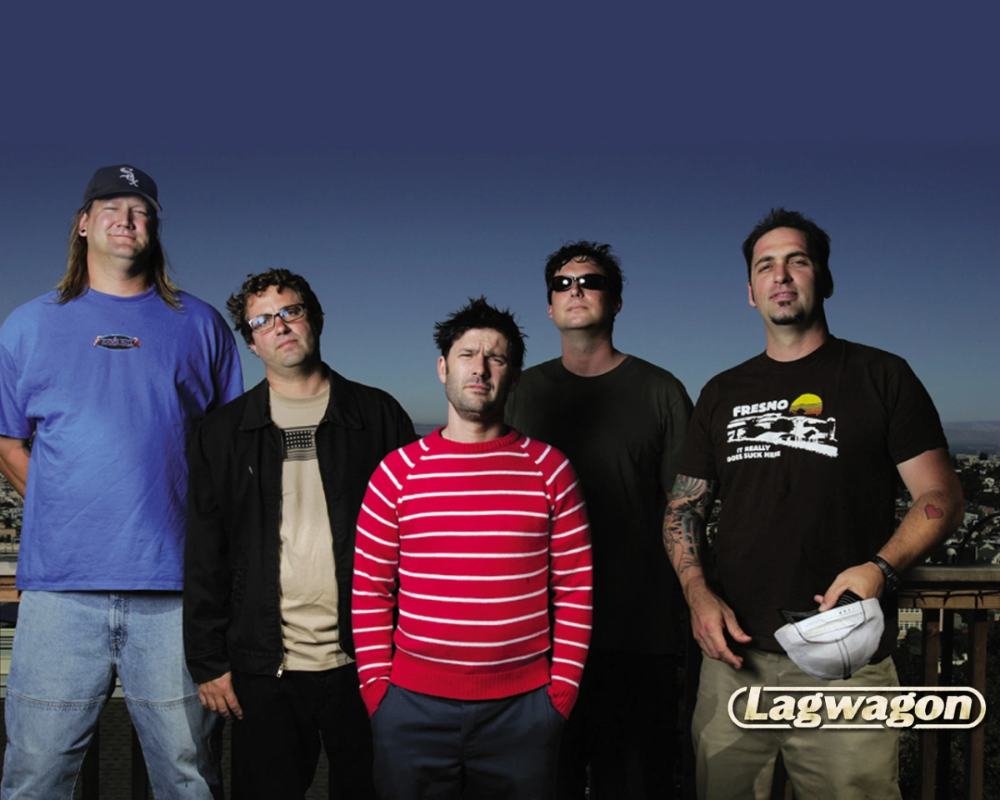
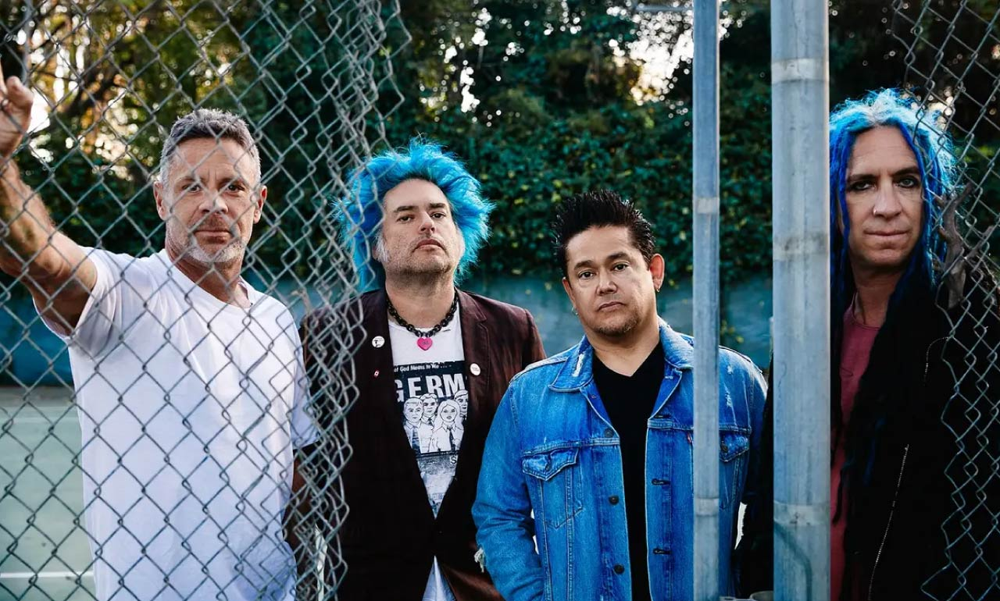

Bad Religion

Bad Religion es una banda estadounidense de punk rock fundada en 1980 en el sur de California por Greg Graffin (voz), Jay Bentley (bajo), Jay Ziskrout (batería) y Brett Gurewitz (guitarra), a la que se le adjudica haber guiado el resurgimiento del punk rock en el mainstream, así como haber influenciado a lo largo de su trayectoria a un gran número de músicos del punk y del rock.
Lagwagon

Lagwagon es un grupo musical de punk rock estadounidense fundado en 1990 en Goleta, Santa Bárbara, California. Los Miembros actuales del grupo son: Joey Cape (voz), Chris Flippin (guitarra), Chris Rest (guitarra), Joe Raposo (bajo) y Dave Raun (Batería). Cuentan con 10 lanzamientos a través del sello discográfico Fat Wreck Chords: siete álbumes de estudio, un álbum en vivo, cuatro EP, y una colección de caras B, rarezas y demos.
NoFX

NOFX es una banda californiana de punk rock formada en 1983 por Fat Mike como bajista, vocalista y compositor, y el guitarrista Eric Melvin. El baterista Erik Sandin se les unió poco después, y junto con El Hefe (guitarra principal y trompeta desde 1991) conforman la banda en la actualidad.